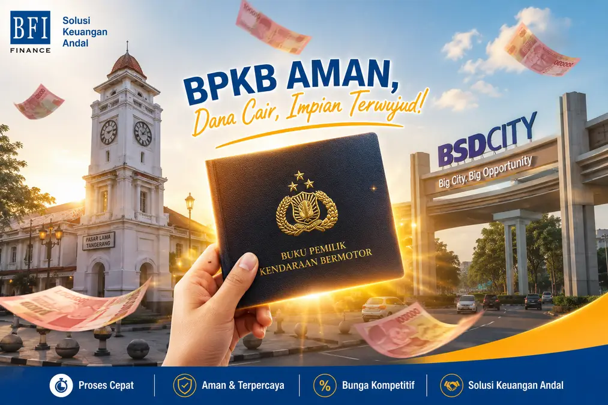

Tempat Gadai BPKB Mobil & Motor di Tangerang: Proses Kilat & Transparan

Kebutuhan dana mendesak untuk modal usaha, biaya pendidikan, atau keperluan darurat lainnya seringkali menuntut solusi yang tidak hanya cepat, tetapi juga aman. Bagi warga Tangerang, salah satu opsi paling rasional adalah melakukan gadai BPKB mobil atau motor.
Sebagai salah satu wilayah penyangga ibu kota dengan aktivitas ekonomi dan industri yang sangat tinggi, Tangerang memiliki aksesibilitas keuangan yang luas. Namun, pastikan Anda hanya memilih lembaga pembiayaan (leasing) resmi yang terdaftar di OJK untuk menghindari risiko penyalahgunaan dokumen penting Anda.
Kriteria Batas Tahun Kendaraan (Penting Diketahui!)
Sebelum Anda melakukan pengajuan, sangat penting untuk mengetahui kelayakan kendaraan yang akan dijadikan jaminan. BFI Finance memberlakukan standar tahun pembuatan demi menjaga kualitas pembiayaan. Berikut rinciannya:
- Mobil Penumpang (Sedan, Jeep, Minibus): Usia maksimal kendaraan adalah 15 tahun saat pengajuan. Kendaraan di bawah kriteria tahun ini secara otomatis akan ditolak oleh sistem.
- Mobil Komersial (Pick-Up, Truk): Batas maksimal usia kendaraan lebih ketat, yaitu maksimal 10 tahun.
- Sepeda Motor: Umumnya menerima unit motor dengan usia maksimal 10 tahun terakhir dari merk-merk terkemuka seperti Honda, Yamaha, Kawasaki, atau Suzuki (tergantung kebijakan wilayah setempat).
Mengapa Harus Mengajukan Lewat Sales Resmi Kami?
Tangerang terkenal dengan tingkat mobilitas dan kemacetan jalanan yang tinggi. Kami menawarkan solusi praktis agar Anda tidak perlu membuang waktu produktif Anda:
1. Layanan Jemput Berkas di Rumah
Anda tidak perlu repot-repot menerobos kemacetan Tangerang untuk datang ke kantor cabang. Setelah konsultasi awal via WhatsApp, tim sales resmi kami yang akan datang langsung menemui Anda untuk memeriksa kelengkapan berkas fisik dan melakukan gesek nomor mesin/rangka kendaraan.
2. Cakupan Wilayah Tangerang Raya yang Luas
Kami melayani pengajuan dana dari berbagai wilayah administrasi di Tangerang, yang nantinya akan diproses di kantor cabang BFI Finance terdekat dari rumah Anda:
- Kota Tangerang: Karawaci, Cipondoh, Ciledug, Jatiuwung, Batuceper, Periuk, Cibodas, Benda, dsb.
- Tangerang Selatan (Tangsel): Serpong, Gading Serpong, BSD, Ciputat, Pamulang, Pondok Aren, Bintaro, Setu.
- Kabupaten Tangerang: Cikupa, Balaraja, Pasar Kemis, Curug, Kelapa Dua, Tigaraksa, Sepatan, Rajeg.
Butuh Solusi Rumah Kontrak?
Banyak warga pendatang di Tangerang tinggal di rumah sewa/kontrak. Jangan berkecil hati, Anda tetap bisa mengajukan dana! Simak tipsnya di sini: Trik Lolos Survei Gadai BPKB Meskipun Rumah Kontrak ».
Hubungi Sales BFI Tangerang Sekarang
Dapatkan simulasi pencairan gratis, penjelasan angsuran transparan, dan proses kilat tanpa biaya perantara/calo tersembunyi.